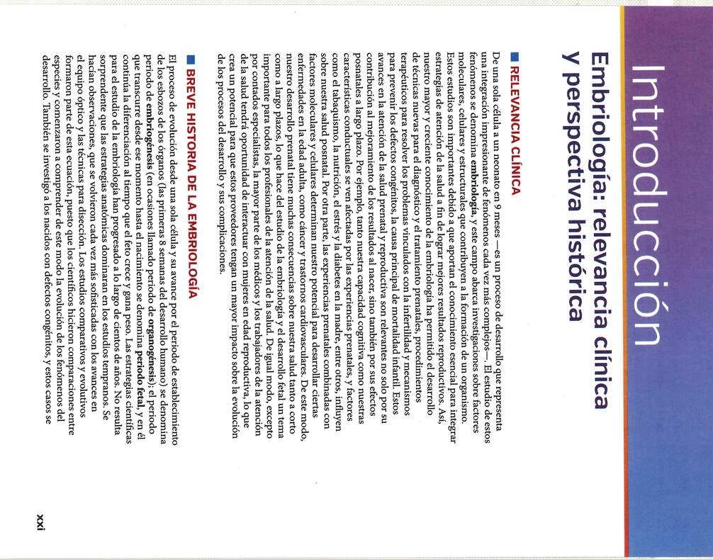
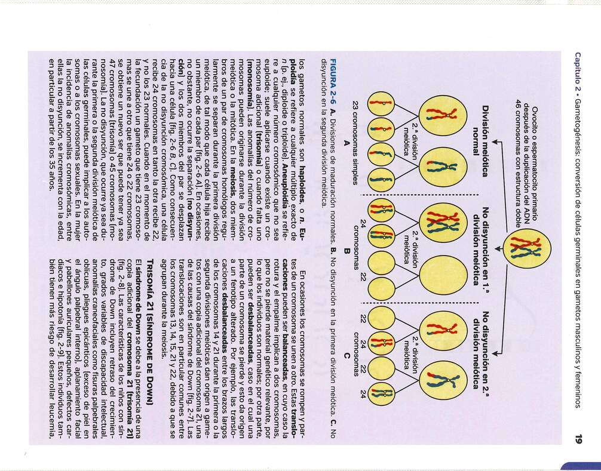
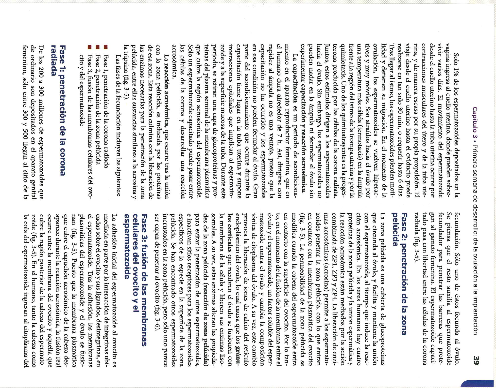
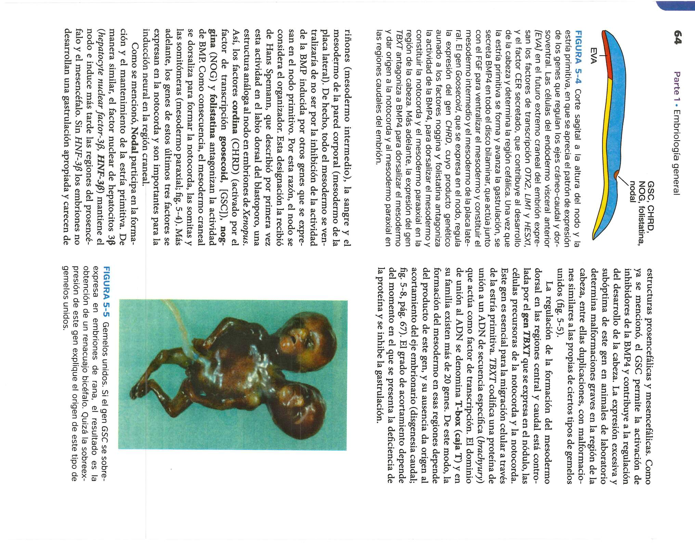

Capítulo 1: Introducción a la Embriología y Gametogénesis
La embriología médica estudia el desarrollo prenatal del ser humano desde la fecundación hasta el nacimiento. Durante la gametogénesis, las células germinales primordiales experimentan meiosis para reducir su número de cromosomas a la mitad (23 cromosomas, estado haploide).


La espermatogénesis ocurre en los túbulos seminíferos y la ovogénesis inicia en los ovarios durante el desarrollo fetal, deteniéndose en la profase de la meiosis I hasta la pubertad.
Capítulo 2: Primera Semana de Desarrollo (Ovulación a Implantación)
Tras la ovulación, el ovocito secundario es captado por las trompas de Falopio. La fecundación se produce habitualmente en la ampolla. El cigoto inicia la segmentación formando la mórula y posteriormente el blastocisto.


Hacia el día 6 o 7, el trofoblasto del blastocisto se adhiere al epitelio endometrial del útero iniciando la implantación.
Capítulo 3: Segunda Semana de Desarrollo (Disco Germinativo Bilaminar)
El embrioblasto se diferencia en dos capas: el epiblasto y el hipoblasto, formando el disco embrionario bilaminar. La cavidad amniótica surge dentro del epiblasto mientras el saco vitelino primitivo se forma a partir del hipoblasto.


Capítulo 4: Tercera Semana de Desarrollo (Gastrulación y Disco Trilaminar)
La gastrulación es el proceso decisivo donde se establecen las tres capas germinativas: Ectodermo, Mesodermo y Endodermo. Comienza con la formación de la línea primitiva en la superficie del epiblasto.


Se desarrolla la notocorda, la cual induce el engrosamiento del ectodermo suprayacente para formar la placa neural.
Capítulo 5: Período Embrionario (Semanas 3 a 8 y Organogénesis)
Durante la fase de organogénesis, cada una de las tres capas germinativas origina tejidos y órganos específicos. El plegamiento del embrión (cefalo-caudal y lateral) le otorga su forma cilíndrica característica.

